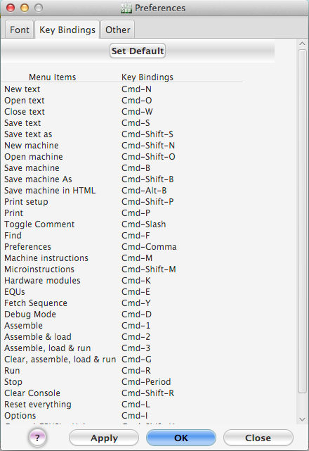

Figure 26. The font tab of the preferences dialog.
The "Preferences" dialog is for changing the many of the default operations of CPU Sim. Any changes made are saved on the user's computer and so are stored between uses of CPU Sim.
Figure 26. The font tab of the preferences dialog.
The "Font" pane is for changing the font, font size, font style, and background for the assembly language text windows and the register and ram tables. It is also for changing the syntax highlighting of the contents of assembly language text windows.
When determining the syntax highlighting of the contents of
assembly language text windows, the following definitions apply:

Figure 26. The key bindings tab of the preferences dialog pane.
The "Key Bindings" pane is for setting keyboard shortcuts for certain menu items. Some menu items like Cut, Copy, Paste, Select All, Undo, and Redo cannot have their keyboard shortcuts rebound. To change a keyboard shortcut simply click on its current shortcut and press whatever key you would like it to be bound to. Regardless of what key you press, there will be at least one modifier attached (Ctrl for Windows users and Cmd for Macintosh users). You can attach other modifiers if you hold them down as you press the key you want the menu item to be bound to. Keyboard shortcuts that have their own meaning in your operating system (Cmd-Q as an example for Macintosh users, Alt-F4 as an example for Windows users) cannot be bound to menu items in CPUSim.

Figure 26. The other tab of the preferences dialog.
The "Other" tabbed pane is for setting other preferences.
The "Apply" button immediately applies the changes you made in the three tabs without closing the dialog box. The "Close" button closes the dialog without applying any of the changes (but previous applications of changes made using the "Apply" button will remain in effect). The "OK" button applies all changes and closes the dialog.